🦜 奥林匹克森林公园
家庭观鸟完全攻略
北京奥林匹克森林公园 · 北森 · 首次家庭观鸟
📅 2026年6月13日（周六）| ☀️ 夏季专版
📋 共收录 31 种鸟类 · 配图完整版
🚇 交通
地铁8号线「森林公园南门站」A/B口出
自驾导航「奥森南园南门停车场」(建议8点前到)
⏰ 最佳时间
清晨 6:00-9:00（强烈推荐）
傍晚 16:00-18:00
🎒 装备建议
双筒望远镜(8×42)、暗色衣服、遮阳帽
水壶、防蚊液、给孩子准备任务卡
🎫 门票
免费！无需预约
旺季 6:00-22:00 开放
🗺️ 推荐路线（6:00-12:00）
6:00-8:00南园南门 → 奥海观水鸟（绿头鸭、小䴙䴘、白骨顶）→ 沉水廊道
8:00-9:00湿地芦苇区（震旦鸦雀 ⭐、棕头鸦雀、东方大苇莺、文须雀）
9:00-9:30生态廊桥 → 过五环到北园
9:30-10:30北园大树园林鸟（红嘴蓝鹊、啄木鸟、乌鸫、黑尾蜡嘴雀）
10:30-11:00北园湿地"大坑"（再找芦苇鸟）
11:00-11:30北园雨燕塔看雨燕盘旋
11:30-树荫野餐 🍱 下午自由活动
📜 文明观鸟守则（全家一起遵守）
- 📏 和鸟类保持 5米以上 距离
- 🚫 拍照不用闪光灯（尤其繁殖期会惊吓弃巢）
- 🤫 保持安静，不要突然大喊大叫
- 🍞 不投喂——人类食物对鸟类有害
- 🌿 不踩踏芦苇——很多鸟在根部筑巢
- 📸 先观察再拍照——让孩子先用眼睛看
🌊 水域鸟种（12种）
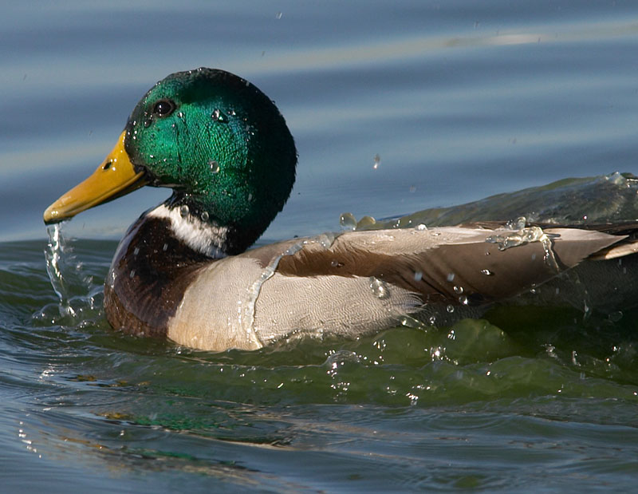
01
🦆 绿头鸭
⭐⭐⭐⭐⭐雁形目 鸭科
♂头绿色金属光泽，白颈环，栗胸，黄绿嘴。♀全身褐色斑驳。
北京最常见水鸟，不惧人。杂食性，水面倒立探底取食。6月可见母鸭带小鸭。
奥海南岸、北岸浅滩
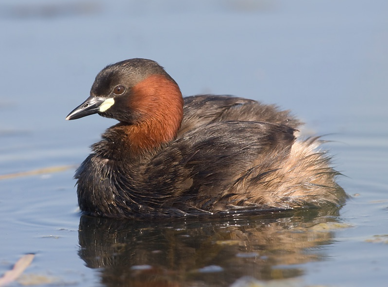
02
🦆 小䴙䴘
⭐⭐⭐⭐⭐䴙䴘目 䴙䴘科
小巧（27cm），繁殖期喉部栗红色，尾羽极短，像水葫芦。
潜水能手，一个猛子能潜十几米。清脆颤音，水中精灵。
奥海、湿地水面
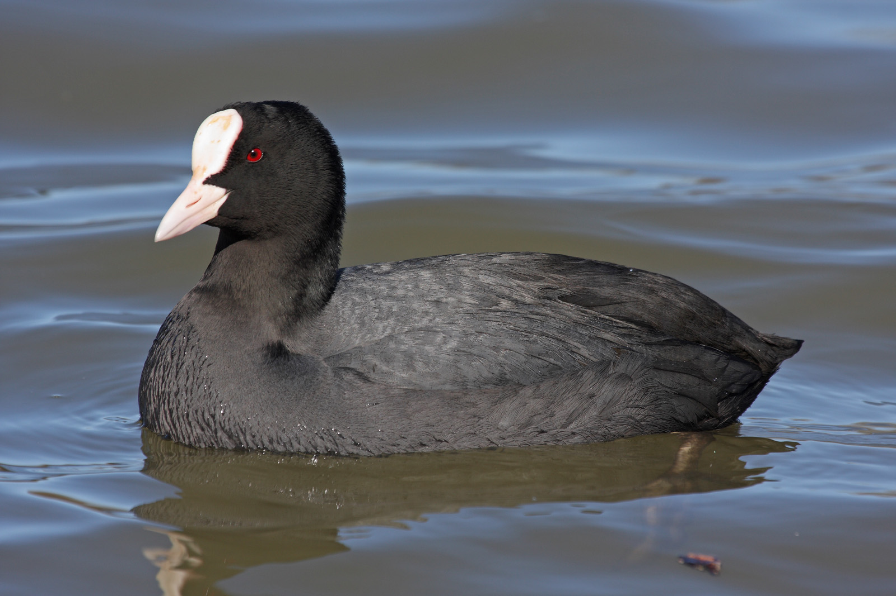
03
🦆 白骨顶
⭐⭐⭐⭐⭐鹤形目 秧鸡科
全身黑羽，额头白色骨板，白嘴——黑衣白帽。
走路摇摇摆摆像企鹅，入水变潜水艇（潜10秒10米）。领地意识强。
奥海湖面
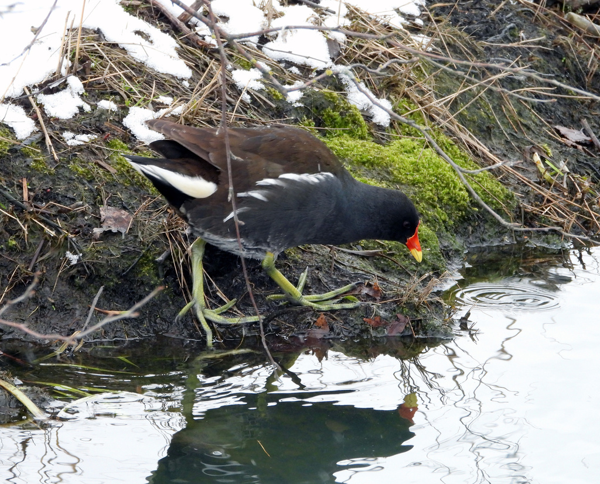
04
🦆 黑水鸡
⭐⭐⭐⭐鹤形目 秧鸡科
黑褐色，红色额甲（和白骨顶区别），嘴端黄色，脚绿，尾下两片白斑。
水面浮叶上行走，尾羽不停上翘。6月能看到毛茸茸的雏鸟。
奥海芦苇边缘
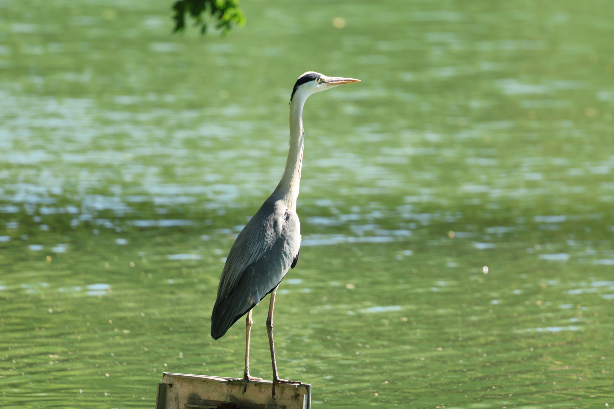
05
🦢 苍鹭
⭐⭐⭐⭐鹈形目 鹭科
大型涉禽（近1m），灰白色，黑眉纹延伸到后颈，飞行脖子S形。
老等——站浅水区一动不动等鱼，一蹲半小时。起飞姿态优雅。
奥海北岸浅滩
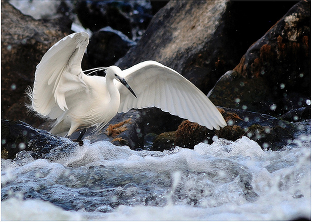
06
🦢 小白鹭
⭐⭐⭐⭐鹈形目 鹭科
全身纯白，黑嘴黑腿，黄脚趾是标志。繁殖期后脑两根饰羽。
浅水快步追鱼，姿态轻盈。比苍鹭活跃很多。
奥海湿地浅水区
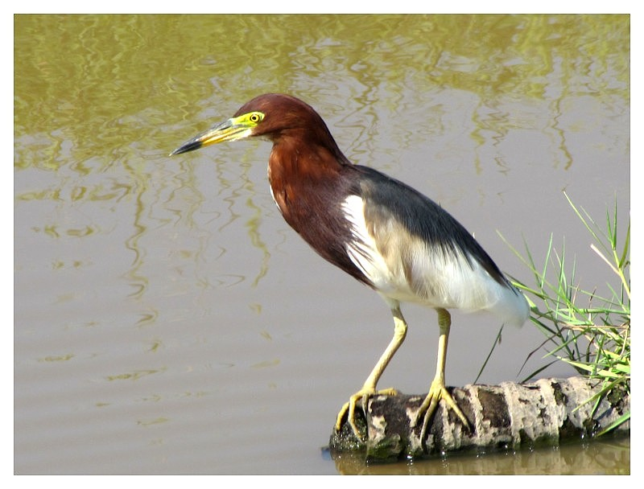
07
🦢 池鹭
⭐⭐⭐鹈形目 鹭科
繁殖期头颈深栗色，背蓝灰，翅膀白——红头灰背白翅膀。
水边静立等鱼，受惊飞起时白色翅膀非常醒目。
湿地芦苇边
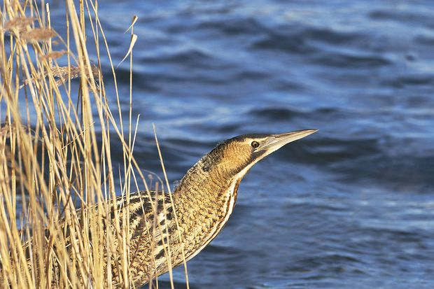
08
🦢 大麻鳽
⭐⭐鹈形目 鹭科
黄褐色迷彩服，密布黑纵纹。警戒时嘴尖朝天，完美伪装成芦苇。
伪装大师！站芦苇中一动不动融为环境。晨昏活动为主。
北园芦苇区
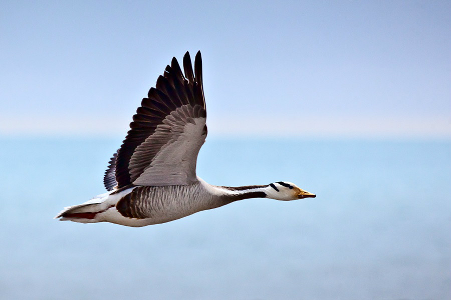
09
🦆 斑头雁
⭐⭐⭐雁形目 鸭科
头顶白，后脑两道黑横斑像斑马帽，脖子白，背灰褐。
高原飞行冠军——能飞越珠峰！奥森常和灰雁混群。
奥海湖面

10
🦆 灰雁
⭐⭐⭐⭐雁形目 鸭科
灰褐色羽毛，粉红嘴+粉红脚，像穿芭蕾舞鞋。欧洲家鹅祖先。
悠闲划水，偶尔伸长脖子互啄斗嘴，萌度爆表。
奥海湖面
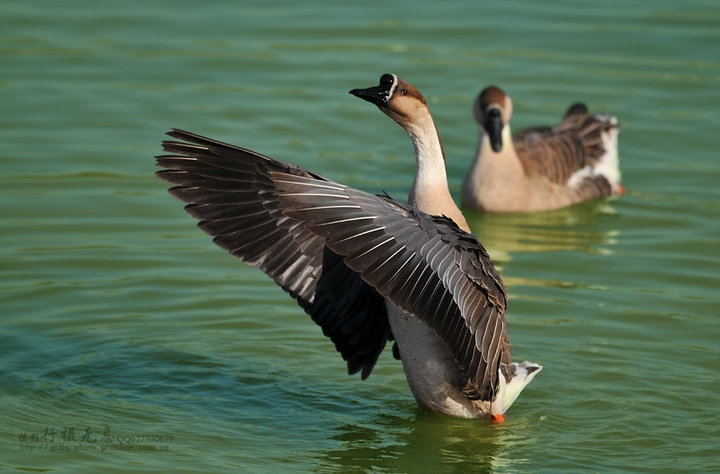
11
🦆 鸿雁
⭐⭐⭐雁形目 鸭科
橙红嘴，黑白分明的颈部条纹。中国土生家鹅的祖宗。
爱扎堆晒太阳，叫声低沉如男低音合唱。飞行队列整齐如仪仗队。
奥海湖面
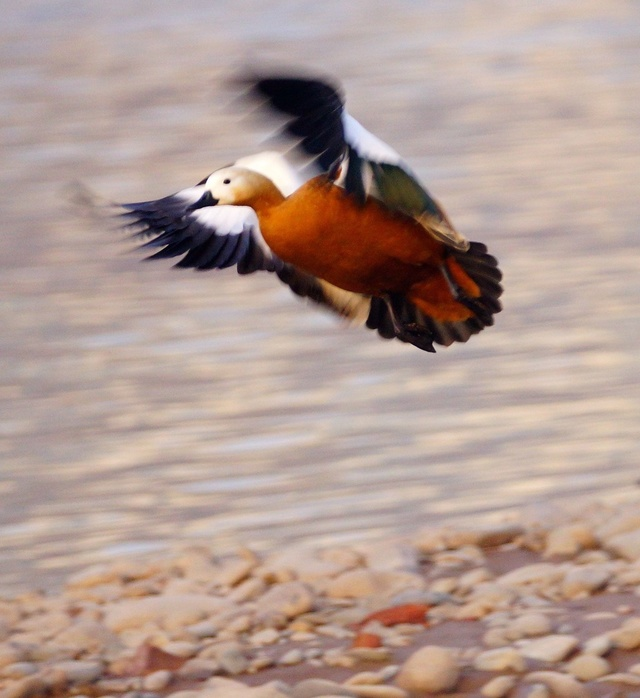
12
🦆 赤麻鸭
⭐⭐⭐雁形目 鸭科
通体橙黄至栗色如熟柿子，翅有白斑和铜绿翼镜，嘴脚黑。
飞行时白色翅斑非常显眼。奥森高光鸟种。
奥海湖面
🌳 林地与灌丛鸟种（11种）
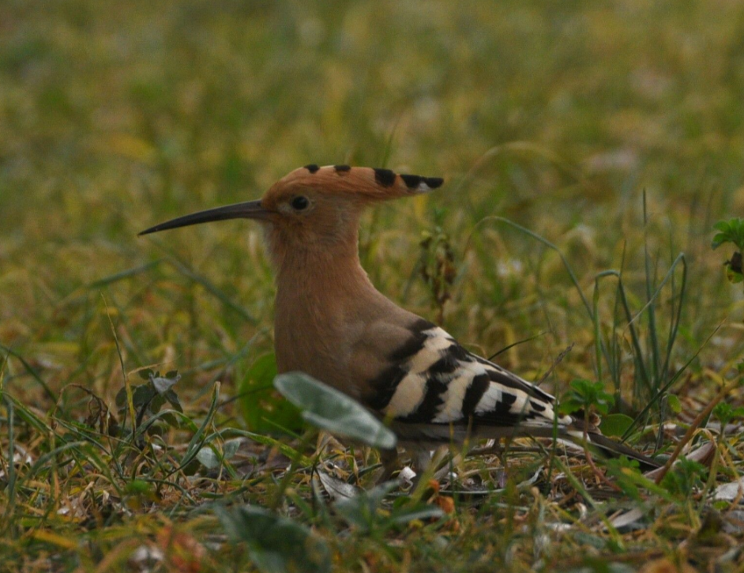
13
🐦 戴胜
⭐⭐⭐⭐犀鸟目 戴胜科
橘褐体羽，黑白相间大扇子羽冠，长弯细嘴。鸟界时尚icon！
地面一蹦一跳找虫，羽冠时展时收。自带发条超可爱。6月可能见喂雏。
南园草地林缘
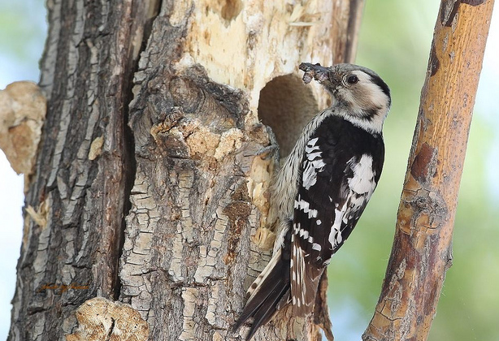
14
🐦 星头啄木鸟
⭐⭐⭐⭐䴕形目 啄木鸟科
迷你（15cm），灰褐色头带星星斑点，♂后脑有小红斑。
哒哒哒敲树找虫像给病树听诊。害羞怕人，会躲树干后面。
北园林地
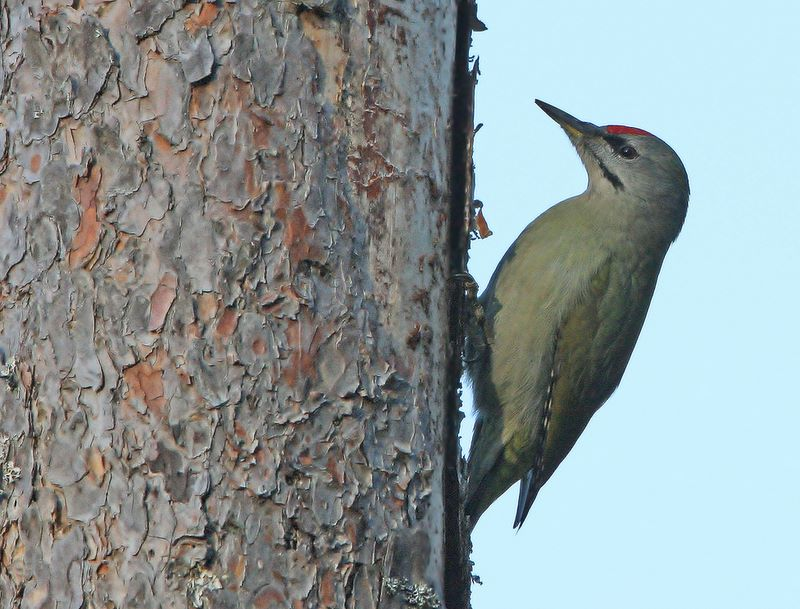
15
🐦 灰头绿啄木鸟
⭐⭐⭐䴕形目 啄木鸟科
绿背红顶，配色高级！♂头顶一抹红像时尚挑染。
啄木声洪亮如咚咚咚敲木鱼，舌头能伸10cm勾虫。
北园林地
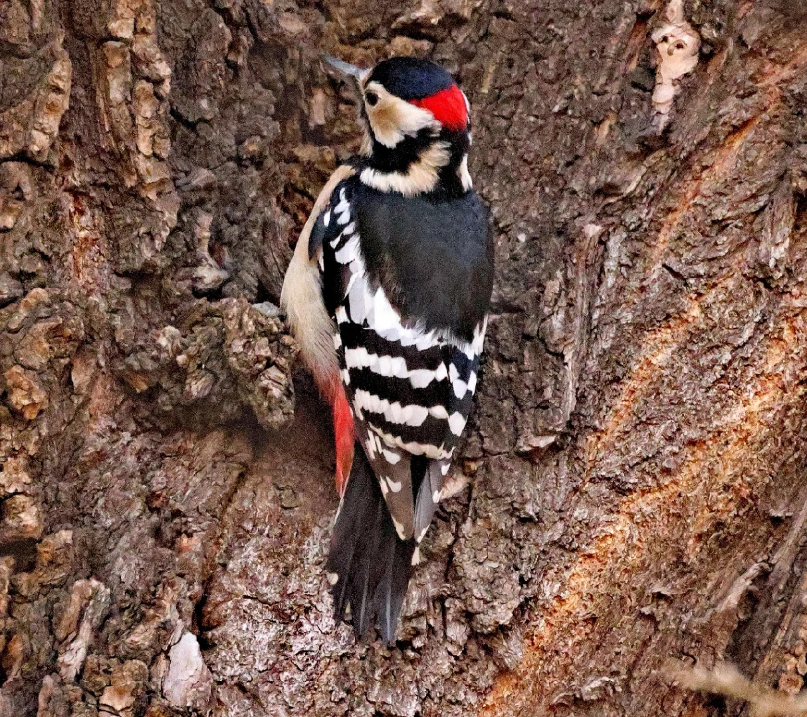
16
🐦 大斑啄木鸟
⭐⭐⭐䴕形目 啄木鸟科
上体黑白如斑马，肩大白斑，尾下覆羽红色，♂后枕有红斑。
典型森林医生，敲击节奏快速有力，螺旋式上树。
南北园林地
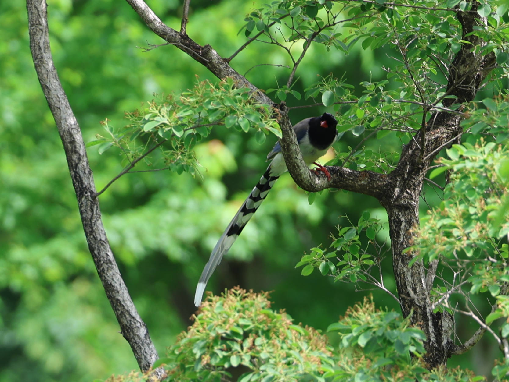
17
🐦 红嘴蓝鹊
⭐⭐⭐⭐⭐雀形目 鸦科
蓝灰礼服，红嘴如涂口红，长尾如飘带。阳光下羽毛金属光泽——颜值担当。
鸦科社牛代表，成群叽喳开茶话会。会模仿其他鸟叫。
北园大树园
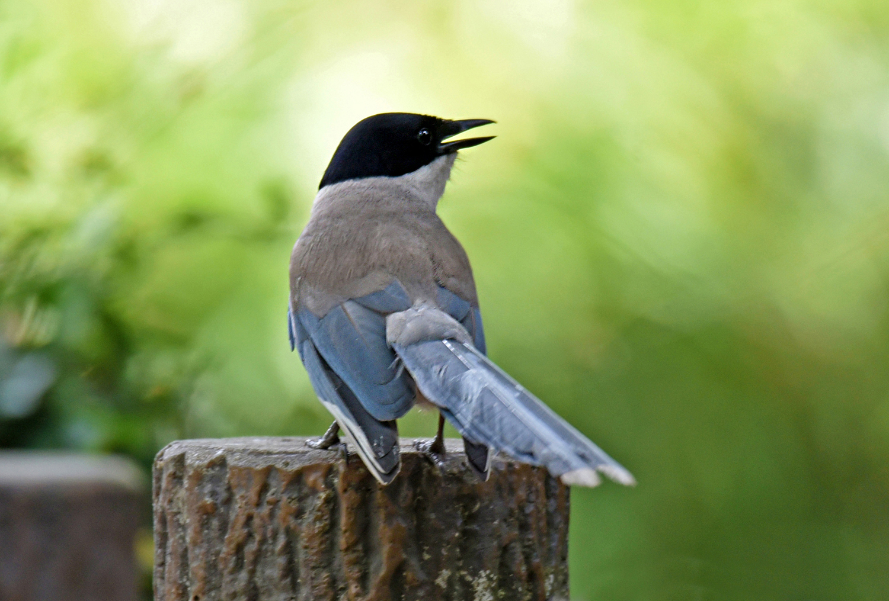
18
🐦 灰喜鹊
⭐⭐⭐⭐⭐雀形目 鸦科
头黑亮蓝，身体灰蓝，长尾占身体一半，飞起来像蓝丝带。
比喜鹊更爱扎堆，十几只霸占树枝。吃毛虫是森林小卫士。
南北园到处有
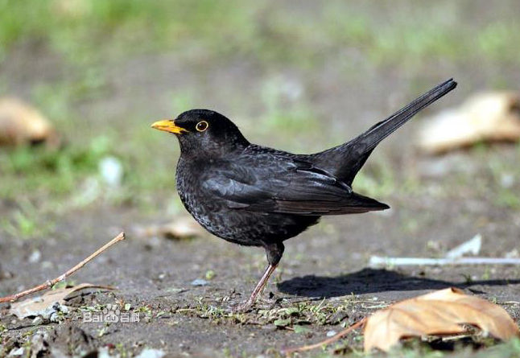
19
🐦 乌鸫
⭐⭐⭐⭐雀形目 鸫科
♂全身黑羽+橘黄嘴+黄眼圈，像黑西装绅士。♀黑褐色。
模仿大师！能模仿手机铃声、汽车警报。清晨树顶高歌，号称百舌。
清晨林地
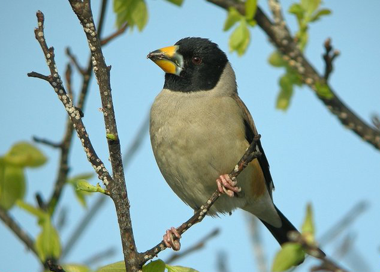
20
🐦 黑尾蜡嘴雀
⭐⭐⭐雀形目 燕雀科
黑短尾+黄色超大厚嘴！♂头黑，♀头灰。嗑瓜子冠军。
嗑瓜子速度堪比人类，还会把果壳堆成小山。
林缘灌丛果树区
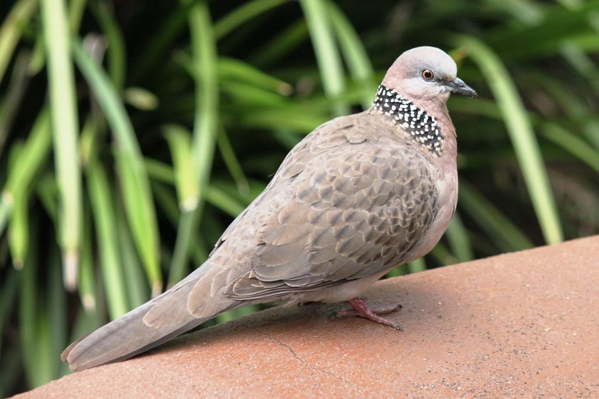
21
🐦 珠颈斑鸠
⭐⭐⭐⭐⭐鸽形目 鸠鸽科
颈部黑底白珠的珍珠围脖，上体淡褐色，像穿了貂皮大衣。
城市最常见斑鸠，地面散步不怕人。飞行时翅膀呼呼声。
草地、步道
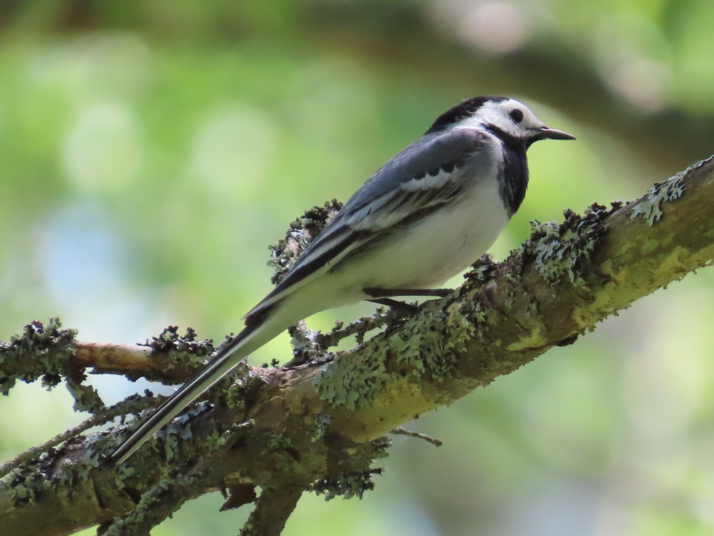
22
🐦 白鹡鸰
⭐⭐⭐⭐雀形目 鹡鸰科
黑白相间，长尾不停上下摆动——标志动作！地面快步小跑。
尾巴像上了发条不停上下点动，水边快步追虫吃。
湖边湿地、草地
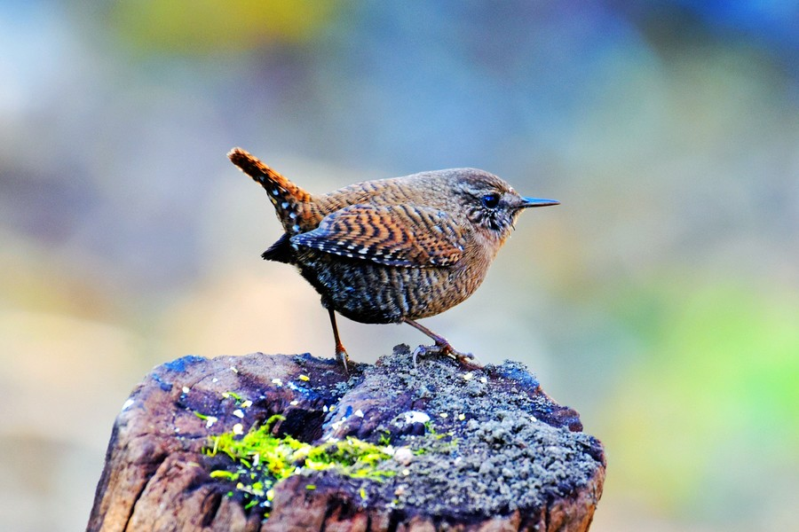
23
🐦 鹪鹩
⭐⭐雀形目 鹪鹩科
超迷你（9-10cm，比鸡蛋还轻！），褐色细密横斑，短尾常翘。
个头小能量大，树枝间跳来跳去像小火箭，鸣声异常响亮。
灌丛、林地底层
🌾 芦苇湿地专有鸟种（4种）⭐ 奥森最大特色

24
🐦 震旦鸦雀 ⭐
⭐⭐⭐（珍稀）雀形目 鸦雀科
体长18cm，黄厚嘴带钩，黑眉纹，上背黄褐有黑纵纹。鸟中大熊猫！国家二级！
中国特有珍稀鸟种！严重依赖芦苇，用厚嘴撕开芦苇找虫。奥森是市区最稳定能看到它的地方！
北园湿地芦苇区、南园沉水廊道
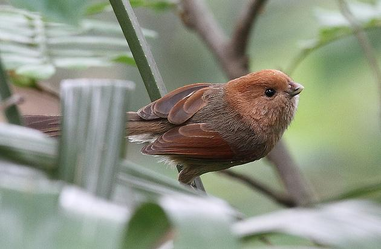
25
🐦 棕头鸦雀
⭐⭐⭐⭐⭐雀形目 鸦雀科
头顶至背棕红，圆滚滚身体+长尾羽，像小球长了长尾巴。
社交达人，成群在苇秆间跳跃，叽叽喳喳互相呼应。
芦苇丛各处
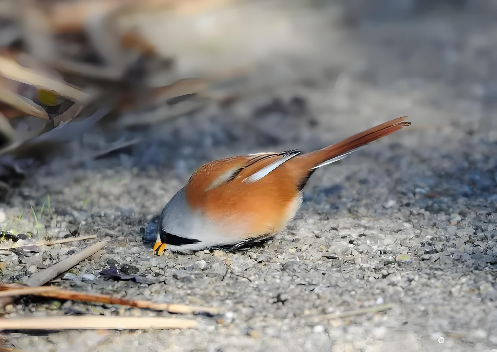
26
🐦 文须雀
⭐⭐⭐雀形目 鸦雀科
♂有八字胡标志——眼周黑色向下延伸。身体淡黄褐色。
体操小王子！苇秆上绕杆旋转、腾空跳跃，偶尔表演一字马。
北园湿地芦苇区
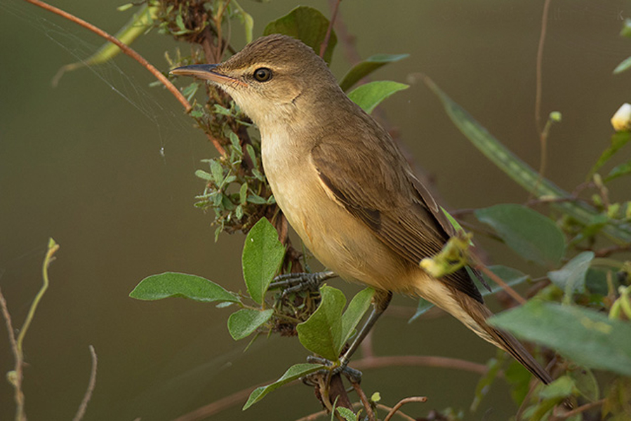
27
🐦 东方大苇莺
⭐⭐⭐⭐⭐雀形目 苇莺科
上体橄榄褐，下体乳黄，皮黄色眉纹。站在苇秆顶端高歌。
芦苇荡摇滚歌手，鸣声响亮刺耳，6月叫最欢。常被大杜鹃巢寄生。
芦苇区（先闻其声）
🎵 夏季迁徙/鸣禽（4种）
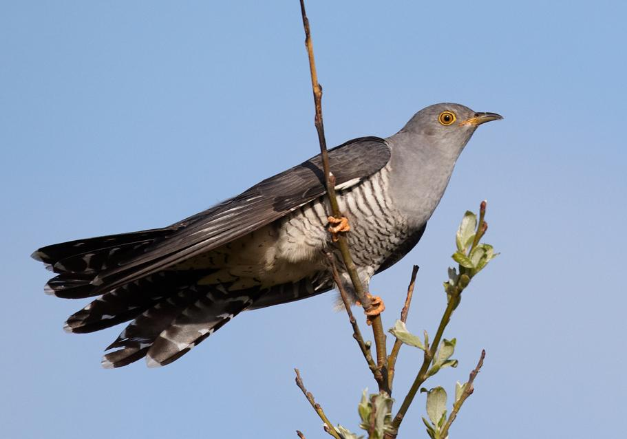
28
🎵 大杜鹃
⭐⭐⭐鹃形目 杜鹃科
上体灰色，腹白有黑横纹，像小鹰。布谷—布谷叫声人人耳熟。
著名巢寄生鸟——自己不筑巢，把蛋下在东方大苇莺巢里。6月叫得最欢。
湿地芦苇区上空
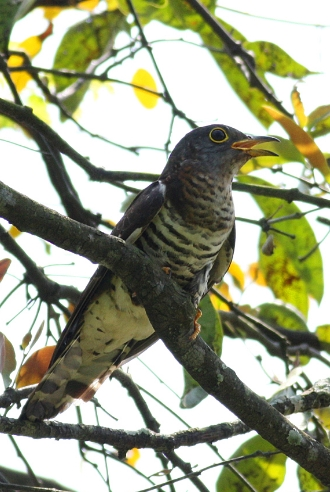
29
🎵 四声杜鹃
⭐⭐⭐鹃形目 杜鹃科
和大杜鹃相似，叫声四声一度：快快割麦——快快割麦——。
叫声四声一组。和大杜鹃一样巢寄生。
湿地周边树林
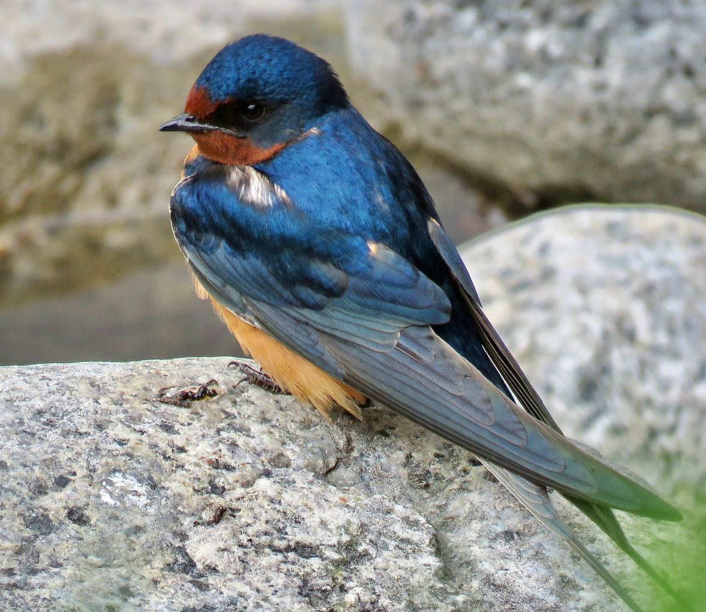
30
🐦 家燕
⭐⭐⭐⭐⭐雀形目 燕科
上体蓝黑光泽，前额喉部栗红，尾深叉如剪刀——燕尾服。
低空捕虫高手，几乎不落地。6月育雏期，亲鸟频繁回巢。
湖面、草地上空
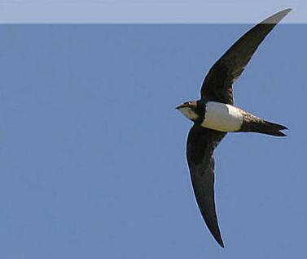
31
🐦 普通雨燕
⭐⭐⭐⭐⭐雨燕目 雨燕科
全身黑褐，翅膀像镰刀狭长，飞行极快。四趾全朝前无法地面站立。
北京标志夏候鸟，速度达110km/h。傍晚北园雨燕塔上百只盘旋，震撼！
北园雨燕塔，傍晚
🏆 奥森观鸟大满贯挑战
一天能集齐多少种？和孩子一起打卡！
☐ 01. 绿头鸭
☐ 02. 小䴙䴘
☐ 03. 白骨顶
☐ 04. 黑水鸡
☐ 05. 苍鹭
☐ 06. 小白鹭
☐ 07. 池鹭
☐ 08. 大麻鳽
☐ 09. 斑头雁
☐ 10. 灰雁
☐ 11. 鸿雁
☐ 12. 赤麻鸭
☐ 13. 戴胜
☐ 14. 星头啄木鸟
☐ 15. 灰头绿啄木鸟
☐ 16. 大斑啄木鸟
☐ 17. 红嘴蓝鹊
☐ 18. 灰喜鹊
☐ 19. 乌鸫
☐ 20. 黑尾蜡嘴雀
☐ 21. 珠颈斑鸠
☐ 22. 白鹡鸰
☐ 23. 鹪鹩
☐ 24. 震旦鸦雀 ⭐
☐ 25. 棕头鸦雀
☐ 26. 文须雀
☐ 27. 东方大苇莺
☐ 28. 大杜鹃
☐ 29. 四声杜鹃
☐ 30. 家燕
☐ 31. 普通雨燕
🏆 满30种=奥森观鸟王者 | 满20种=观鸟达人 | 满10种=入门啦！